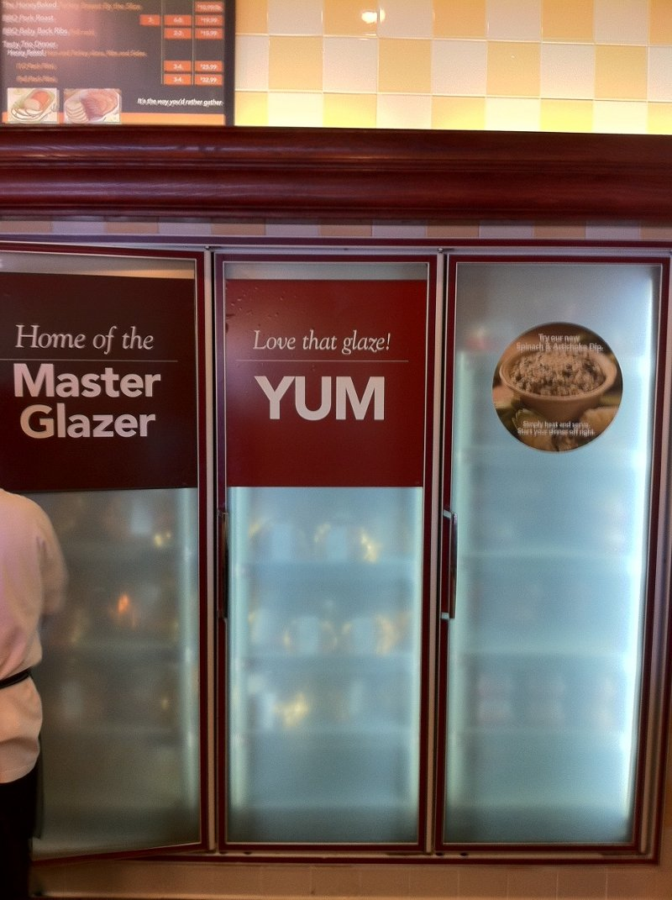

...making Linux just a little more fun!
Ben Okopnik [ben at linuxgazette.net]
----- Forwarded message from "s. keeling" <keeling at nucleus.com> -----
Hey B. I looked into the "Flash Problems" link. Useful information, thanks.
[I'm back using my sandbox machine as possible kernel bug is burning up my AMD 64 HP Pavilion. Running Sidux-->aptosid on a Compaq Evo PIV-2.4GHz] This works:
i browser-plugin-gnash - GNU Shockwave Flash (SWF) player - Plugin for i gnash - GNU Shockwave Flash (SWF) player i A gnash-common - GNU Shockwave Flash (SWF) player - Common file
I've no trouble reading LG, including cartoons. Thanks for helping me figure this out.
It does tend to spiral out of control on bad flash
(WaPo), but it's more usable than Adobe's has been
(MB-3 menu actually gives the user control!!!
Woohoo!). 
-- Any technology distinguishable from magic is insufficiently advanced. - -
----- End forwarded message -----
Deividson Okopnik [deivid.okop at gmail.com]
Hello everyone
My old internet server crashed and i had to setup a new one, and im having several problems.
My squid configuration is pretty simple, I basically allow everything:
Allow manager localhost Deny manager Allow purge localhost Deny purge Allow localhost Allow all
And my iptables config file is empty (exists but is empty - /etc/network/iptables)
And msn doesnt work on the machines behind the proxy, and noone can atach files to emails - im guessing no ports are being forwarded (cause of the empty iptables file) but if I put content in it, eg.:
#!/bin/bash iptables -Fand do an sudo iptables-apply, it gives me an "line 2 failed - failed" - what am I doing wrong? btw im on ubuntu 10.04, and allowing any outgoing connection to any port would be good enough, later Ill think about the security.
[ Thread continues here (4 messages/8.47kB) ]
Jimmy O'Regan [joregan at gmail.com]
"Unlogo is an FFMPEG AVFilter that attempts to block out corporate logos using OpenCV 2.1 and an awesome 'plugin' framework for FFMPEG developed by Michael Droese." http://unlogo.org/pages/about Code: http://code.google.com/p/unlogo/
-- <Leftmost> jimregan, that's because deep inside you, you are evil. <Leftmost> Also not-so-deep inside you.
Ben Okopnik [ben at linuxgazette.net]
----- Forwarded message from H?rda Bud <hardabud at romandie.com> -----
Date: Mon, 04 Oct 2010 10:25:47 +0200 From: H?rda Bud <hardabud@romandie.com> To: TAG <tag@lists.linuxgazette.net> To: editor at linuxgazette.net Subject: Linux ComicHello,
A comic you might be intrested in: "Jolly Roger - a history about copyright in cyberspace"
From the historical background of "intellectual property" to ACTA, through Free Software, Napster and much more. Told in a simple and funny way, this comic (under Creative Commons) is available in downloadable CBZ and EPUB formats or to be read directly on the site: http://www.hardabud.com/jollyroger/
Hope you enjoy it Best regards,
Anders hardabud.com
----- End forwarded message -----
-- * Ben Okopnik * Editor-in-Chief, Linux Gazette * http://LinuxGazette.NET *
Ben Okopnik [ben at linuxgazette.net]
Another stunning TED presentation (I have to ration myself on those; I can only stand so many meteor impacts on my heart and soul in a week.) This one is about improving global living standards, and open source as an inevitably required part of it.
http://www.ted.com/talks/cameron_sinclair_on_open_source_architecture.html
-- * Ben Okopnik * Editor-in-Chief, Linux Gazette * http://LinuxGazette.NET *
Neil Youngman [ny at youngman.org.uk]
I have a glitch that's stumped both me and my sysadmin.
I wanted to know which hosts a particular file that needed updating was on and I thought this simple loop would answer that question.
$ for n in `seq 1 25`; do ssh host$n ls -l /path/to/file; done
This worked for the first 4 hosts, ten it got to the 5th host where it displayed the banner and hung. Trying it directly as a simple command;
$ ssh host5 ls -l /path/to/file
also hung after displaying the banner.
$ ssh host5
allowed me to log in normally and
$ ls -l /path/to/file
showed that the file did not exist on host5.
Next I tried
$ ssh echo foo
which worked normally, so I tried
$ ls -l /bin/sh
which also worked normally.
$ ssh host5 strace ls -l /path/to/file
didn't hang either and I couldn't see anything that struck me as odd in the output
$ ssh 'host5 ls -l /path/to/file 2> /dev/null'
did not hand ang modifying it to
$ ssh 'host5 ls -l /path/to/file 2>&1'
allowed me to see the error message.
The problem seems to be related in some way to the handling of standard error, but I can't think of anything that would cause it to behave like that. I have a workaround that gets me the information I need, but I would like to resolve the underlying problem. Do any of the gang have any idea what could cause this sort of behaviour?
Neil Youngman
[ Thread continues here (2 messages/2.73kB) ]
Dr. Parthasarathy S [drpartha at gmail.com]
I have a question about importing public keys using GPG/Kgpg (under Linux). I get a public key file (it is an ascii text file usually). I would like to check the fingerprint of the key, **without importing the key into my keyring**. Is there a way out using GPG/Kgpg (under Linux) ? Someone give me a clue please.
Many thanks,
partha
-- --------------------------------------------------------------------------------------------- Dr. S. Parthasarathy | mailto:drpartha at gmail.com Algologic Research & Solutions | 78 Sancharpuri Colony | Bowenpally P.O | Phone: + 91 - 40 - 2775 1650 Secunderabad 500 011 - INDIA | WWW-URL: http://algolog.tripod.com/nupartha.htm GPG Public key :: http://algolog.tripod.com/publikey.htm ---------------------------------------------------------------------------------------------
Neil Youngman [ny at youngman.org.uk]
Some time ago I came across PDFTK, but I've never really had a use for it. it sounds as though it should do what you need, but a quick scan of the man page doesn't tell me whether it honours restrictions in the PDF.
http://www.pdflabs.com/tools/pdftk-the-pdf-toolkit/
Neil Youngman
[ Thread continues here (2 messages/2.49kB) ]
Ben Okopnik [ben at linuxgazette.net]
http://trouble-maker.sourceforge.net/
App randomly breaks your system so you can learn how to fix it. Um, billed as "not for production systems".
-- * Ben Okopnik * Editor-in-Chief, Linux Gazette * http://LinuxGazette.NET *
[ Thread continues here (3 messages/2.30kB) ]
Ben Okopnik [ben at linuxgazette.net]
Rather interesting new bit from Google: on-the-fly page/site optimization. Wonder what the magic trick is... I'll have to look into it as soon as I have some Spare Time. [hollow laugh]
----- Forwarded message from Diana Wilson <dianawilson at google.com> -----
Date: Wed, 3 Nov 2010 09:03:53 -0700 From: Diana Wilson <dianawilson@google.com> To: TAG <tag@lists.linuxgazette.net> To: undisclosed-recipients: ; Subject: Developer News: Making Websites Run Faster by 2xHi, We just?launched a new open-source Apache module called mod_pagespeed that any webmasters can use to quickly and automatically optimize their sites. (It's like Page Speed, but makes the changes automatically.) It can reduce page load times by up to 50% -- in other words, essentially speeding up websites by roughly 2x. This is one of our more significant "speeding up the web" contributions.?
Webmasters know that if it's not fast, it doesn't matter how pretty it is -- people won't use it. At Google, we're obsessed with speed--we measure it, pick it apart, think about it constantly. It's even baked into our quarterly goals. Mod_pagespeed comes on the heels of a bunch of other speed pushes we've already told you about, from Google Instant to the Images redesign to SPDY to Fast Flip to ultra-high-speed broadband... etc.
Let me know if you have any questions or want a deep dive briefing. Regards, Di -- Diana Wilson Developer Global Communications and Public Affairs Manager direct: 650-253-6280 cell: 916-768-2202 dianawilson at google.com ----- End forwarded message -----
-- * Ben Okopnik * Editor-in-Chief, Linux Gazette * http://LinuxGazette.NET *
[ Thread continues here (3 messages/4.15kB) ]
Ben Okopnik [ben at linuxgazette.net]
Just gotta share this with you folks:
http://gizmodo.com/5691747/prepare-for-t[...]-meltingly-realistic-cgi-youve-ever-seen
100% computer-generated.
We now live in The Matrix.
-- * Ben Okopnik * Editor-in-Chief, Linux Gazette * http://LinuxGazette.NET *
[ Thread continues here (3 messages/2.79kB) ]
Dr. Parthasarathy S [drpartha at gmail.com]
I do send and receive mails frequently in French. I use Thunderbird, or Google mail web interface.
How do I add diacritical marks (accent marks) in the text ?
Can someone guide me please ? I find both scim and ibus clumsy. I was thinking of something simpler like a plugin for gedit or nedit where we can just go ahead and type. Since French has very few characters with accent marks and only about a handful of accent marks, I guess it would be much easier that way. Or is there an easier way ? I remember, long ago, when I was a student, I used to escape and type the Hex value of the ASCII code of these characters.
partha
PS: Why do people become so lazy as they grow up ? ;-)
-- --------------------------------------------------------------------------------------------- Dr. S. Parthasarathy | mailto:drpartha at gmail.com Algologic Research & Solutions | 78 Sancharpuri Colony | Bowenpally P.O | Phone: + 91 - 40 - 2775 1650 Secunderabad 500 011 - INDIA | WWW-URL: http://algolog.tripod.com/nupartha.htm GPG Public key :: http://algolog.tripod.com/publikey.htm ---------------------------------------------------------------------------------------------
[ Thread continues here (10 messages/13.17kB) ]
Jimmy O'Regan [joregan at gmail.com]
http://www.gerv.net/writings/poetic-licence/bsd.html
-- <Leftmost> jimregan, that's because deep inside you, you are evil. <Leftmost> Also not-so-deep inside you.
Mulyadi Santosa [mulyadi.santosa at gmail.com]
Possibly, there are many tools out there that might do the same thing. However, I find parted relatively easy to use when dealing with partition resizing. The command is "resize".
AFAIK, it only resize VFAT, ext2 and ext3. Other filesystem might need external tools, but I haven't checked it thoroughly.
-- regards,
Mulyadi Santosa Freelance Linux trainer and consultant
blog: the-hydra.blogspot.com training: mulyaditraining.blogspot.com
[ Thread continues here (2 messages/1.90kB) ]
Ben Okopnik [ben at linuxgazette.net]
Date: Sun, 28 Nov 2010 11:22:04 +0100 From: Jacopo Sadoleto <jacopo.sadoleto@gmail.com> To: TAG <tag@lists.linuxgazette.net> To: ben at linuxgazette.net Subject: 2-Cent TipBen I would like to submit a tip, it it fails miserably off the mark, please feel free to bin-it...
Sometimes upgrading an Linux distro to a recent version, yields an "No space left on device" (usually /var); For those not willing to use a tool to create, resize, grow a partition, a simple artifice will do the trick:
CTRL-ALT-F2 # mv /var /home/user/? <== or wherever space suffice # cd / # ls -s /home/user/var . CTRL-ALT-F7
[ Thread continues here (6 messages/7.12kB) ]
By Deividson Luiz Okopnik and Howard Dyckoff

|
Contents: |
Please submit your News Bytes items in plain text; other formats may be rejected without reading. [You have been warned!] A one- or two-paragraph summary plus a URL has a much higher chance of being published than an entire press release. Submit items to bytes@linuxgazette.net. Deividson can also be reached via twitter.
 The Yocto Project: New Embedded Linux Workgroup
The Yocto Project: New Embedded Linux WorkgroupThe Linux Foundation in October announced it is expanding its technical work in the embedded space with the continuation of existing CELF work as well as the formation of another new workgroup focused on the embedded space, the Yocto Project.
The Yocto Project provides open source, high quality tools to help companies make custom Linux-based systems for embedded products, regardless of hardware architecture. The open source Yocto Project brings together the elements needed to make the normally difficult embedded Linux development process easier.
The Yocto Project is launching its version 0.9 with initial versions of common build tools.
Participation in the workgroup is completely open and anyone can join the development effort. The Linux Foundation invites contributors and encourages developers and others to participate at the project website: http://www.yoctoproject.org.
Linux Foundation and Consumer Electronics Linux Forum to MergeThe Linux Foundation and the Consumer Electronics Linux Forum (CELF), a nonprofit international open source software development community focused on embedded Linux, have announced they will merge organizations, resulting in the CE Linux Forum becoming a technical workgroup at the Linux Foundation. As part of this merge, the Linux Foundation will expand its technical programs in the embedded computing space.
The use of Linux in embedded products has skyrocketed in recent years, with Linux now being used in consumer electronic devices of all kinds. CELF and the Linux Foundation believe that by combining resources they can more efficiently enable the adoption of Linux in the Consumer Electronics (CE) industry. Given the broad overlap in members between the Linux Foundation and CELF, the similarity in the goals of both organizations, and the large increase of embedded participants coming to Linux in recent years, this aligning of resources will strengthen each organization and ultimately help the organizations' members achieve their missions: growing the embedded Linux market.
"CELF and the Linux Foundation have co-located technical events in the spring over the last couple of years to exchange technical information. We have noticed an increasing number of technical areas that both organizations are interested in," said Nobuhiro Asai, chair of board of directors of the Consumer Electronics Linux Forum. "This merger is a natural transition to accelerate the use of Linux in consumer electronics and strengthen the involvement of CE-related companies within the Linux developer community."
CELF will become an official workgroup of the Linux Foundation. Members of CELF who are not already Linux Foundation members can be grandfathered into the organization at the Silver membership level. Organized to promote the use of Linux in digital CE products, CELF was established in 2003 by eight major consumer electronics companies: Panasonic Corporation (Matsushita Electric Industrial Co., Ltd.), Sony Corporation, Hitachi, Ltd., NEC Corporation, Royal Philips Electronics, Samsung Electronics Co., Ltd., Sharp Corporation, and Toshiba Corporation.
The Linux Foundation will take over the management of CELF's technical events and web infrastructure.
VMware Unveils Strategy for Next Era of ITAt the conclusion of its seventh annual VMworld conference in San Francisco, VMware outlined its vision for IT as a Service as the next big thing and demonstrated new virtualization and cloud computing technologies (see product details in the Product section.)
Paul Maritz, President and CEO of VMware, told the 17,000 attendees at VMworld 2010 that a tipping point had been reached in 2009 when the number of VMs exceeded the number of physical hosts. This means that modern OSes no longer control the hardware and that the new universal HAL is the virtualization hypervisor. "This layer is the new IT infrastructure," Maritz said; "we think this is the new stack that is emerging for the cloud era."
Key highlights made during the event include:
For the first time, the VMworld labs were powered by cloud technology based on VMware vSphere with distributed data centers located in San Francisco, California; Ashburn, Virginia; and Miami, Florida. More than 15,300 labs in total and 145,000 virtual machines were deployed during the conference. This is over 4,000 virtual machines deployed and un-deployed every hour.
More information from VMworld 2010, visit: http://www.vmworld.com/community/buzz/.
Keynote replays are available at: http://www.vmworld.com/community/conferences/2010/generalsessions/.
Next-Generation Storage Can Double Analytics Processing SpeedAt the Supercomputing 2010 conference in New Orleans, IBM unveiled details of a new storage architecture design that will convert terabytes of pure information into actionable insights twice as fast as previously possible. Ideally suited for cloud computing applications and data-intensive workloads such as digital media, data mining and financial analytics, this new architecture can shave hours off of complex computations.
"Businesses are literally running into walls, unable to keep up with the vast amounts of data generated on a daily basis," said Prasenjit Sarkar, Master Inventor, Storage Analytics and Resiliency, IBM Research, Almaden. "We constantly research and develop the industry's most advanced storage technologies to solve the world's biggest data problems. This new way of storage partitioning is another step forward on this path as it gives businesses faster time-to-insight without concern for traditional storage limitations."
Created at IBM Research, Almaden, the new General Parallel File System-Shared Nothing Cluster (GPFS-SNC) architecture is designed to provide higher availability through advanced clustering technologies, dynamic file system management and advanced data replication techniques. By "sharing nothing," new levels of availability, performance and scaling are achievable. GPFS-SNC is a distributed computing architecture in which each node is self-sufficient; tasks are then divided up between these independent computers and no one waits on the other.
For instance, large financial institutions run complex algorithms to analyze risk based on petabytes of data. With billions of files spread across multiple computing platforms and stored across the world, these mission-critical calculations require significant IT resource and cost because of their complexity. Using a GPFS-SNC design provides a common file system and namespace across disparate computing platforms.
For more information about IBM Research, please visit http://www.ibm.com/research.
Ultimate Edition 2.8 Ultimate Edition 2.8, the Ubuntu based gamers' Linux Distro, was released, featuring many improvements. 27 games come pre-installed in this version, including:
A new repository filled to the brim with games has also been pre-added to allow the end user to install additional games if desired.
More information can be found here: http://ultimateedition.info/ultimate-edition/ultimate-edition-2-8/.
openSUSE Medical Team Releases Stable Version 0.0.6openSUSE Medical is a distribution for medical professionals such as doctors and clinical researchers. This is a stable release, and is available for download at http://susegallery.com/a/NETBqB/opensuse-medicalos11332bitkde4.
VortexBox 1.6 released VortexBox is a distro that aims at easy creation of music-servers (or jukeboxes).
Now with Fedora 14, 4K sector driver support and support for USB 2 and 192/24 USB DACs are available, making VortexBox an easy to use auto CD/NAS ripping solution.
More information here: http://vortexbox.org/2010/11/vortexbox-1-6-released/.
BackTrack 4 R2 "Nemesis" Offensive Security has announced the release of BackTrack 4, featuring a new kernel, better desktop responsiveness, improved hardware support, broader wireless card support, a streamlined work environment, and USB 3.0 support.
More information can be found on the Release Page (http://www.backtrack-linux.org/backtrack/backtrack-4-r2-download/) or in the BackTrackWiki (http://www.backtrack-linux.org/wiki/).
VMworld Conferences Strengthen End User Computing Strategy In Copenhagen, at last month's VMworld 2010 Europe, VMware advanced its vision of end user computing with new products to help organizations evolve their legacy desktop computing environments to a user-centric application and data delivery model.
Introduced at VMworld 2010 in San Francisco, IT as a Service is the transformation of IT to a more business-centric approach, focusing on outcomes such as operational efficiency, competitiveness and rapid response. This means IT shifts from producing IT services to optimizing production and consumption of those services in ways consistent with business requirements, changing the role of IT from a cost center to a center of strategic value.
"Desktop computing is rapidly moving to a world focused on connecting end users to critical data and applications they need via any device at the edge of the cloud," said Vittorio Viarengo, vice president, End User Computing products, VMware. "Enterprises today are seeking a path forward from a decades-old PC-centric architecture to a model that enables users to be more productive while more effectively managing the growing portfolio of devices, data and applications. "
The VMware End User Computing strategy delivers solutions for enterprises to evolve their PC-centric environments to a cloud computing architecture to deliver applications and data to end users. Announced in early September at VMworld 2010 in San Francisco, VMware View 4.5, VMware ThinApp 4.6, VMware vShield Endpoint, Zimbra Appliance and VMware's Desktop Infrastructure Service provide a new way of addressing two fundamental client computing challenges: enabling secure data access to a mobile workforce and managing the diversity of data, applications and client devices needed by businesses.
Also in early September, VMware previewed and demonstrated Project Horizon, a cloud-based management service that securely extends enterprise identities into the cloud to provide new methods for provisioning and managing applications and data based on the user, not the device or underlying operating system.
VMware continues to build on this model by introducing VMware View 4.5, a complete virtual desktop solution that can enable enterprises to improve security, lower operating costs, and simplify desktop administration by establishing an architecture that is delivered to users across the broadest set of devices. Siemens will use VMware View 4.5 to establish a hosted desktop environment to provide secure, real-time access to enterprise desktops from any device while reducing the ongoing costs of desktop management.
Outlined in a Reference Architecture Brief announced at VMworld 2010 in San Francisco, and a white paper commissioned by VMware and published by Enterprises Management Associates, VMware View allows enterprises to deploy a secure and stateless virtual desktop at a datacenter infrastructure cost under $242 per user, more than 60 percent lower than previously published architectures.
Available today, the full reference architecture includes detailed validation for a deployment of 1,000 desktops. Download the reference architecture titled VMware Reference Architecture for Stateless Virtual Desktops with VMware View 4.5.
VMware Introduces Cloud App Platform for IT as a ServiceAt VMworld 2010, VMware introduced its cloud application platform strategy and solutions, enabling developers to build and run modern applications that intelligently share information with underlying infrastructure to maximize application performance, quality of service and infrastructure utilization.
VMware vFabric cloud application platform combines the market-leading Spring Java development framework with platform services including lightweight application server, global data management, cloud-ready messaging, dynamic load balancing and application performance management. Applications built on VMware vFabric provide performance and portability across heterogeneous cloud environments.
Principles that have defined today's most demanding consumer applications - built-in scalability, new data models, distributed infrastructures - are influencing the production of new internal customer enterprise applications. These modern applications need to support dynamic user interactions, low-latency data access and virtual infrastructure all while meeting the security and compliance demands of the enterprise. VMware vFabric is optimized for cloud computing's dynamic architectures, unlike traditional middleware that requires complete stack control.
"IT is undergoing a transformation: applications are changing, infrastructure is changing, and organizations are looking for a pathway to harness the promise of the cloud," said Rachel Chalmers, director for Infrastructure at the 451 Group. "Application platforms of today have markedly different requirements than those we have relied upon in the past. VMware vFabric is evolving to meet the needs of today's organizations."
An open solution, VMware vFabric will initially target the 2.5 million users that develop Spring Java applications. VMware vFabric will deliver modern applications to market faster and with less complexity.
VMware vFabric Integrated Application Services is a collection of cloud-scale, integrated services, including:
Additional Resources
Spring and the VMware vFabric family of products are available today for download. For additional information about VMware's cloud application platform, please visit http://www.springsource.com/products/cloud-application-platform.
Zimbra Desktop 2.0 combines user collaboration with offline accessAvailable now, Zimbra Desktop 2.0 extends the power of Software as a Service (SaaS)-based collaboration to the desktop with an unparalleled end user experience that works across many different platforms. Zimbra Desktop 2.0 is designed to give Zimbra Collaboration Suite users customizable offline access to their email, contacts, calendar and document management in one central place. Moreover, Zimbra Desktop 2.0 operates consistently across all platforms (Windows, Mac, and Linux) and provides a unified offline solution for businesses with multiple operating systems for end users.
Additionally, Desktop 2.0 brings a new manageability and integration to SaaS-based applications by enabling users and administrators to download Zimlets directly to their desktop or VDI client. Zimlets seamlessly integrate Zimbra's collaboration experience with third-party, SaaS-based data sources to create new "mash-up" user interfaces within a user's email and collaboration environment.
The new Social Zimlet in Desktop 2.0 can integrate updates from Twitter, Facebook, Digg and other social networks. With more than 100 Zimlets available for download, features such as translation, CRM, photos, maps and online meeting management can be easily added to the desktop client. Additional information on VMware Zimbra Desktop 2.0 can be found at http://www.vmware.com/files/pdf/vmworld/vmware-zimbra-desktop2.0-en.pdf.
Zimbra Desktop 2.0 is available worldwide as a free-of-charge download in 12 languages, including: Danish, Dutch, French, German, Italian, Polish, Russian, Spanish, Swedish, and Turkish.
| Share |

|
Talkback: Discuss this article with The Answer Gang
![[BIO]](../gx/authors/dokopnik.jpg)
Deividson was born in União da Vitória, PR, Brazil, on 14/04/1984. He became interested in computing when he was still a kid, and started to code when he was 12 years old. He is a graduate in Information Systems and is finishing his specialization in Networks and Web Development. He codes in several languages, including C/C++/C#, PHP, Visual Basic, Object Pascal and others.
Deividson works in Porto União's Town Hall as a Computer Technician, and specializes in Web and Desktop system development, and Database/Network Maintenance.
Howard Dyckoff is a long term IT professional with primary experience at
Fortune 100 and 200 firms. Before his IT career, he worked for Aviation
Week and Space Technology magazine and before that used to edit SkyCom, a
newsletter for astronomers and rocketeers. He hails from the Republic of
Brooklyn [and Polytechnic Institute] and now, after several trips to
Himalayan mountain tops, resides in the SF Bay Area with a large book
collection and several pet rocks.
Howard maintains the Technology-Events blog at
blogspot.com from which he contributes the Events listing for Linux
Gazette. Visit the blog to preview some of the next month's NewsBytes
Events.

By Silas Brown
Commercial Windows programs like CrazyTalk let you turn any image into an animation that lip-syncs to speech audio, so you can create talking characters. In this article, I will outline how to do this using nothing but free Linux tools. The result is more basic but it should be adequate in many cases.
Start with the image you want to animate in PNG format, preferably at a fairly low resolution so that the face fits in 100x100 pixels or so (which saves you from making too many frames). The face should have a fully-closed mouth initially, so let's call the image mouth-closed.png. Load it into The GIMP (gimp mouth-closed.png) and use the scale drop-down box (on the status bar) to get it up to 400% or 800% zoom so you can work with individual pixels. Scroll the image to the mouth area.
Enable GIMP's Free Select tool, either by finding it in the toolbox window or by pressing F. This tool lets you draw freehand areas of the image you want to manipulate. For example, you can erase an unwanted background to white by drawing around areas of the background and pressing Control-X to cut them out. However, in this case we want to drag the bottom half of the mouth down, opening it by one pixel, and we'll probably want the inside of the mouth to be black rather than white. Therefore, it is important to set the background colour to black. This can be done, for example, by using the GIMP toolbox window to swap the foreground and background colours.
Carefully draw a line that horizontally traces out where the lips join. Without releasing the mouse, drag downward a little and continue to draw around the entire lower half of the mouth. You don't need to worry about ending on the exact point where you started, as The GIMP will complete your path with a straight line if necessary. If you make a mistake, click outside the selected area to cancel it and try again.
When you have the lower half of the mouth selected, press Control-X to cut it out, and then press Control-V to paste. Then drag the pasted copy so that it is about one pixel below its original position. You should now have about one pixel of black in the mouth, showing it is partially open. (I say "about" one pixel of black, because it won't be a clear-cut black line; The GIMP will be anti-aliasing it for you.) Click outside the selected area to cancel the selection, and go back to 100% zoom to check how it looks. Then save the image as mouthopen-1.png.
Now repeat the process to get the mouth opened by another pixel. It's better if this time you don't select quite as far as the extreme corners of the partially-opened mouth, because the middle of a mouth moves more than its corners. Save the result as mouthopen-2.png.
If you're working in a low enough resolution, then you should find that those two are enough. But you can try making mouthopen-3.png as well if you like, in which case make sure it is listed in the script below.
This is not very professional because the true shape of a mouth will depend on the vowel that is being spoken and not just the volume of the speech, but for light use you might be surprised how far you can get by simply using the amplitude.
Because we'll be using a simple Python script to convert the amplitude to a lip position, it is very important that the audio file we start with has absolutely no background noise. (If you want background noise in the final result then you'll have to mix it in after running the script below.) If the audio file has been generated by a speech synthesizer (espeak or whatever) then that should be perfect, but if you are going to record it then you'd better make sure to record in a very quiet environment.
We need to make sure that our speech file (let's call it speech.wav) is padded with at least 3 seconds of silence at the end. This is because we'll be using MEncoder later, and a bug in some versions of MEncoder can cause the last 3 seconds of audio to be lost. (You can skip this step if you don't have a buggy MEncoder, in which case just call the file padded.wav.)
sox speech.wav padded.wav pad 0.1 3
You should now have a file padded.wav with the extra silence in it. Next, for our "analytical" purposes, we convert this to unsigned 8bit 4kHz mono (but don't throw away the original!) so that we can read out the amplitudes more easily with a script.
sox padded.wav -1 -u -c 1 -r 4000 -t raw rawfile
This should make a file rawfile which the following Python script can use to convert into an image sequence (actually a sequence of symbolic links to your frames). The Python script will then run mencoder to make the actual animation.
framerate = 10 ; slice=4000/framerate
dat = open("rawfile").read()
frames = []
import os
for i in range(0,len(dat),slice):
samples = map(lambda x:ord(x)-128,
dat[i:i+slice])
frames.append(max(samples))
pics = ["mouth-closed.png",
"mouthopen-1.png",
"mouthopen-2.png"]
max_mouthOpen = len(pics)-1
step = int(max(frames)/(max_mouthOpen*2))
for i in range(len(frames)):
mouth=min(int(frames[i]/step),max_mouthOpen)
if i:
if mouth>frames[i-1]+1:
mouth=frames[i-1]+1
elif mouth < frames[i-1]-1:
mouth=frames[i-1]-1
else: mouth=0
frames[i] = mouth
os.system("ln -s %s frame%09d.png" %
(pics[mouth],i))
os.system(("mencoder 'mf://frame0*.png' " +
"-audiofile padded.wav -mf type=png " +
"-mf fps=%d -oac mp3lame -ovc lavc " +
"-o animation.avi && rm frame0*.png")
% framerate)
Make sure there are no files that match the pattern frame0*.png in the current directory when you run this. The output is saved to animation.avi which you can then view in mplayer.
Because this approach opens the mouth by only a few pixels, the resulting video is unlikely to scale well. Rather than try to scale the video after it has been produced, try to make sure the original image is of the right dimensions to start with.
Some versions of MEncoder/MPlayer might not manage to keep the audio in sync with the video for long sequences (more than a few seconds). A player with a setting like "override AVI frame rate based on audio" will not have this problem, and neither does YouTube's uploads converter.
| Share |
|
Talkback: Discuss this article with The Answer Gang
![[BIO]](../gx/authors/brownss.jpg) Silas Brown is a legally blind computer scientist based in Cambridge UK.
He has been using heavily-customised versions of Debian Linux since
1999.
Silas Brown is a legally blind computer scientist based in Cambridge UK.
He has been using heavily-customised versions of Debian Linux since
1999.
Now it happened that Kanga had felt rather motherly that morning, and Wanting to Count Things - like Roo's vests, and how many pieces of soap there were left, and the two clean spots in Tigger's feeder. -- A. A. Milne, The House at Pooh Corner
I'm responsible for a farm of Linux and Unix machines. I'm still coming to terms with all the computers in my domain. There's the usual panoply of servers: DNS, DHCP, email, web servers, and file servers, plus computers which provide the infrastructure for the organisation: accounts, HR, administration, etc. The list goes on.
Seemingly rare these days, my desktop runs Linux. From my homebase, I ssh into one server or another as I go about my daily duties.
I also have a laptop, but is sits to one side on my desk. Its main purpose is to play music while I wage an endless war with the backup system. Put tapes in; take tapes out; curse the tape drive, the jukebox, and the rotten software. Rinse and repeat.
My desktop is set up exactly as I like it. The entire range of my HAL (Henry Abstraction Layer) is available. On most of the servers on the internal network, this is also true. Typically they mount my home directory from the file server, the home directory which is repository to the things that matter to me.
|
As I reread this article, I wondered what is in my HAL these days. Quite educational. Here's the summary: 170 aliases alias | wc 56 envars env | wc 93 local vars set | grep '^[^ ]*=' | wc 65 functions set | fgrep ' ()' | wc 159 shell scripts files ~/scripts/*.sh | wc 964 help files ls ~/help*/help_* | grep -v "~$" | wc The lesson for me is that many of these have passed their use-by date. I haven't used them in yonks and I can't even remember what they were for. I think it might be time for a big clean up. Also, to be perfectly honest, some of the help files are repeated in different directories. When I used:
ls ~/help*/help_* | grep -v "~$" | \
awk -F / '{print $NF}' | sort -u | wc
the number shown was only 812. |
It's a bit like being at home. There are vastly more clothes than I usually wear. But they're in a cupboard somewhere and easily accessible. When the seasons change, so does my wardrobe.
There are also several servers which do not have access to the file server. These are typically Internet-facing servers like the external DNS, our Internet web presence, FTP. Also, the way the organisation is structured, there are some semi-autonomous islands, groups of computers that have an independent file server.
Arguably, I should install a mirror of my home directory on the file servers for the islands. Perhaps in the fullness of time I will. In the meantime, I have been forced to focus on what's important.
If you live in a GUI world, I doubt that what follows will interest you.
My desktop runs a windowing system (OLVWM, for what it's worth). But apart from the almost mandatory browser (Firefox), the GUI for the backup system and the occasional XPDF, the purpose of the windowing system is to run oodles of xterms. How many in an oodle? I'm glad you asked.
psa | grep xterm | wc 177 5298 34702
I guess I'm running 177 xterms at the moment. Some are local to my desktop. Just to check:
psa | grep -w ssh | wc 44 574 4260
That's 44 ssh sessions to remote machines. There should be many more, but many of the servers time me out. So, many of the xterms were sshed into a server and are now sitting back at the bash prompt on my desktop.
A crude count can be obtained thus:
psa | grep xterm | grep unix | wc 82 2501 16251
That suggests another 38 have been used to get onto another server and have been timed out. Sometimes I have more than one xterm to a single server. (The reason the command works is that most of our Unix/Linux servers have "unix" as the first part of their name. It is but a crude approximation.)
I've tried to live with what's available on any particular machine. And, at a pinch, I can do it. But I find myself thinking too much about how to do something, and not enough about what I want to do next.
When you plan a holiday, you don't usually expect to take your entire wardrobe. Typically, you will only be gone a few weeks; with a bit of luck, the weather at your destination will be a single season. For me, the hope is that it will be summer: I only need to pack underwear, shorts and T shirts.
But whatever you decide to do, you are forced to focus on what's important. Is it worth the extra effort to carry a second pair of shoes? Do I really need a dressing gown? (No!)
After several months, it turns out that what I really need when I visit these alien machines is just four things. I've put these four things in a file; and I've dedicated one of my xterms to displaying the file. Here's the part that's relevant:
------------------------------------------------------------------------
PS1='\[\033[1m\]\h:\w-\t-bash\$\[\033[0m\]\n\$ '
dth ()
{
case $1 in
+*)
lines=-`echo $1 | cut -c2-`;
shift
;;
esac;
ls -lat "$@" | head $lines
}
alias p=pushd
alias bdx='builtin dirs |tr " " "\012" |awk "{print NR-1, \$0}"'
------------------------------------------------------------------------
When I visit a limited machine, after starting bash if necessary, I can add this small part of my HAL with a simple triple-click-drag, move the mouse, middle-button.
It's a curious collection of commands. If you'd asked me six months ago to list the 4 most important components in my HAL, I might have guessed one or two of these, at most.
So here's what they do and why they are so important.
Here is the standard prompt on one of our machines:
[root@venus ~]#
What does it tell me? Very little.
Here is the prompt after I have set PS1:
venus:~-21:33:16-bash# #
First of all, it is bold. It constantly fascinates me that others seem not to care about this. If I issue a command that produces an indeterminate amount of output (like ls), with the speed of computers and communications these days, the output appears in a twinkling. All I can see is a screenfull of stuff. Where does the output of the last command start? What about the command before that?
Because my prompt is bold and deliberately quite long, it's almost as if I had ruled a line before each command. The last command (or any before it) are easy for the eye to locate. If there were half-way decent colours available, I might be tempted to use colours.
Did I mention that the prompt is quite long? If you look closely, you'll notice that it's actually a two-line prompt. The commands are typed on the second line, starting at the third character from the left of the screen.
I choose not to have the prompt tell me which user I am running as. It's either henry or root, and the # means root; otherwise it would be $ and mean henry.
It has been pointed out to me that it is redundant to have "bash" in the prompt, and I agree. Eventually, I will fix that; but so far it has not caused me sufficient inconvenience to bother.
I prefer "venus:" to "@venus". Look what happens if I cd to somewhere else:
p /var/log venus:/var/log-21:45:40-bash#
With my mouse, I can select the prompt before the hyphen and use it in another xterm (one on my desktop) as part of the scp to transfer files between the server and my desktop. For example:
scp -p venus:/var/log/syslog /tmp
It's not just a matter of less typing, though I welcome that; it increases accuracy. Across machines, as in scp, you don't get file completion.
The last part of the prompt is the time. Apart from constantly providing me with the time, it also provides automatic (albeit crude) timing for commands. How long did that last copy take? Look at the time before it started, estimate how long it took to type the command, subtract from the time in the prompt when it finished.
Where it is often valuable is in telling me when a command finished. In this case, the indicated time is totally accurate. Why is that important?
Well, first you have to understand that I am constantly being interrupted all day long. That comes with the territory. So I want to check, did I copy the relevant file before I sent the email? No. Well that explains why that didn't work. I'd better do it again.
Perhaps not of all this is important to others. Perhaps none of it is. It sure is important to me. That prompt has evolved over the last 20 years.
What's more important: underwear or shorts? Food or drink? It's probably a silly question; if you need both, they're both important.
So, also, the function is every bit as important as the prompt.
This function is my most used command. What does it do? In essence it lists the 10 most recent entries in a directory.
When I list a directory (think /etc or /var/log), the last thing I want to know is how many files are there. I'm not interested in anything that has been there for a long time. That's just dross and distraction.
What I want to know is what has changed recently?
If all I wanted out of dth was what I have described in the summary, I could have got by with an alias (almost). And for many years I did. But, since it's my most used command, I got fancier.
Sometimes I want to see the first 15 entries. I can enter
dth +15
and it will list the first 15 entries *and* set the current default to 15. The next time I enter dth without a plus-arg, I'll get 15 entries instead of 10. Of course, I can set it back with
dth +10 yada yada
There's one other fringe benefit. On some systems, by default, `ls' is aliased to `ls --color=tty'.
I'm not sure exactly why, but when I use dth I don't see those annoying and largely unreadable colours; I get standard black and white. Of particular joy to me, I don't ever have to see blinking red.
[ Piping the output of 'ls' into anything else makes 'ls' drop the highlighting, etc. - since it's possible that those control characters could "confuse" the downstream program. Clever gadget, that 'ls'. -- Ben ]
In my opinion, those few lines pack a powerful punch.
I may as well discuss them together since they complement each other.
Instead of "cd" I prefer "pushd". And I prefer it even more if I can get away with typing just "p".
For those not familiar, I can do no better than quote bash's help:
------------------------------------------------------------------------
builtin help pushd
pushd: pushd [dir | +N | -N] [-n]
Adds a directory to the top of the directory stack, or rotates
the stack, making the new top of the stack the current working
directory. With no arguments, exchanges the top two directories.
+N Rotates the stack so that the Nth directory (counting
from the left of the list shown by `dirs', starting with
zero) is at the top.
-N Rotates the stack so that the Nth directory (counting
from the right of the list shown by `dirs', starting with
zero) is at the top.
-n suppress the normal change of directory when adding directories
to the stack, so only the stack is manipulated.
dir adds DIR to the directory stack at the top, making it the
new current working directory.
You can see the directory stack with the `dirs' command.
------------------------------------------------------------------------
I visit a server and usually land in my home directory if I log in as me, root's home directory (usually /root) if I log in as root. Typically I visit several directories.
p /etc ... p /var/log
If all I'm doing is bouncing between those two directories, I can just use "p" without args. Then I visit several more directories. Pretty soon I have a large stack. As the man said, "You can see the directory stack with the `dirs' command".
Well, actually, *I* can't. Long ago, I defined a function "dirs" which lists only the directories in the current directory. So I have to use:
------------------------------------------------------------------------ builtin dirs /p6/home/henryg/Mail/footy /p6/home/henryg/Mail/bv /p6/home/henryg/Mail/personal /p6/home/henryg/Mail/IBM /p6/home/henryg/Mail/lg /p6/home/henryg/Mail/dmo /p6/home/henryg/Mail/theatre /p6/home/henryg/Mail/spam /p6/home/henryg/Mail/mark /p6/home/henryg/Mail/tsf /p6/home/henryg/Mail/Savicky /p6/home/henryg/Mail/sav /p6/home/henryg/Mail/mh_etc /p6/home/henryg/Mail/jen ------------------------------------------------------------------------
You see what's wrong with that picture? First it's one l-o-n-g line. And second, are you really going to count your way to the directory you want?
Enter "bdx", which displays the list and the number needed to get to a particular item:
------------------------------------------------------------------------ bdx 0 /p6/home/henryg/Mail/footy 1 /p6/home/henryg/Mail/bv 2 /p6/home/henryg/Mail/personal 3 /p6/home/henryg/Mail/IBM 4 /p6/home/henryg/Mail/lg 5 /p6/home/henryg/Mail/dmo 6 /p6/home/henryg/Mail/theatre 7 /p6/home/henryg/Mail/spam 8 /p6/home/henryg/Mail/mark 9 /p6/home/henryg/Mail/tsf 10 /p6/home/henryg/Mail/Stephen 11 /p6/home/henryg/Mail/sav 12 /p6/home/henryg/Mail/mh_etc 13 /p6/home/henryg/Mail/jen ------------------------------------------------------------------------
If I want to get to /p6/home/henryg/Mail/spam, I just need to enter
p +7
[Don't reach for you emails just yet.]
... one learns a thing best by teaching it. -- John Barth, "The Sot-Weed Factor"
And so it has been for me. Perhaps I wrote bdx long before bash got smarter. I'd hate to think that I went to all the trouble when I could simply have done
alias bdx='builtin dirs -v'
However, in writing this article (claiming to be a teacher of sorts) I have learnt more about the subject.
(Not in the sense of "drawing a conclusion", more in the vein of "coming to the end") So there you have it. This is the way I pack my bags if I have to travel ultra-light; and these are the reasons why.
| Share |
|
Talkback: Discuss this article with The Answer Gang
![[BIO]](../gx/authors/grebler.jpg)
Henry has spent his days working with computers, mostly for computer manufacturers or software developers. His early computer experience includes relics such as punch cards, paper tape and mag tape. It is his darkest secret that he has been paid to do the sorts of things he would have paid money to be allowed to do. Just don't tell any of his employers.
He has used Linux as his personal home desktop since the family got its first PC in 1996. Back then, when the family shared the one PC, it was a dual-boot Windows/Slackware setup. Now that each member has his/her own computer, Henry somehow survives in a purely Linux world.
He lives in a suburb of Melbourne, Australia.
In two decades, Linux has grown from an early nascent stage to maturity. In the field of multimedia, for example, today Linux supports almost all audio/video formats and sound cards - something that was lacking in the early days. Sound support in Linux has had an interesting journey passing through the different phases. This article aims to summarize the Linux sound system development history, give a comparison of different architectures, and conclude with two real (albeit small) audio applications.
In 1992, Hannu Savolainen wrote the first driver for the Sound Blaster card which was the only available sound card at that time. He called it the Linux Sound Driver. As more sound cards appeared, he went on to develop the Open Sound System (OSS) - one neat little package providing an API for audio applications.
The OSS API was based on standard UNIX devices and system calls (i.e. POSIX open, read, write, ioctl), and therefore developing audio applications became pretty similar to developing other Linux applications. Moreover, audio applications were portable across all UNIX variant operating systems (UNIX, Linux, BSD etc).
The OSS source code was released under the GPL, and Linux included OSS in the mainline kernel. While OSS development was still in progress, Hannu Savolainen was contracted by 4Front Technologies and they decided to make a living with an OSS commercial version. Subsequently, Hannu stopped working on the GPLed version of OSS and continued to develop the proprietary OSS for 4Front Technologies. The result was that kernel sound drivers were frozen at OSS v3.8.
Later, Red Hat Software sponsored Alan Cox, a noted Linux developer, to enhance and modularize the kernel sound drivers. Alan Cox and others made many bug fixes and added drivers for new sound cards. The modified drivers were released for the first time with Red Hat 5.0. Being under GPL, those modifications were later included in the mainline Linux kernel. However, the progress hit a road block after Red Hat stopped sponsoring Alan Cox, as there was no dedicated maintainer for GPL OSS.
The pro-GPL community did not like OSS. In 1998 Jaroslav Kysela wrote a driver for the Gravis Ultrasound soundcard, which he later developed into a new sound architecture called ALSA (Advanced Linux Sound Architecture). ALSA development went on independently until 2002, when ALSA was included in the 2.5 kernel along with OSS.
ALSA architecture distinctly moved away from the POSIX API and introduced a much bigger as well as a more complex API set. While the pro-GPL community endorsed ALSA, it did not find much support from audio application developers who had to re-write their applications using complex ALSA API. The other factor was the risk of losing application portability since ALSA is available only on Linux.
To overcome this problem, ALSA introduced an OSS emulation layer. This made it possible to run OSS audio applications on the ALSA architecture without modifying the application.
However, as anticipated, a heated discussion about the OSS and ALSA merits/demerits started. ALSA was designed to have some additional features which were not present in OSS at that time; however, OSS 4.0 (the proprietary one) claimed to have fixed them all. While ALSA was criticized for its complex API set, OSS had the advantage of having POSIX compliance. On the other hand, OSS was criticized for its non-GPL status, somethign that ALSA had in its favor.
Finally, ALSA got a big thumbs up from Linux: in the 2.6 kernel, Linux replaced ALSA as default sound architecture and OSS was marked as being deprecated.
In 2007, in a surprising move, 4Front Technologies released OSS v4.0 under GPL - which raised many eyebrows. While some experts termed it as "too little and too late", some predicted it as a possible OSS re-entry into the kernel.
Before we conclude the article, let’s take a look at a small audio application written using both APIs to see a real comparison.
This sample application can play an uncompressed PCM, 2-channel (stereo) file. Following are the properties of the audio file shown by file command and mplayer.
|
root@localhost:/root# file sample.wav sample.wav: RIFF (little-endian) data, WAVE audio, Microsoft PCM, 16 bit, stereo 44100 Hz root@localhost:/root# mplayer sample.wav ========================================================================== Forced audio codec: mad Opening audio decoder: [pcm] Uncompressed PCM audio decoder AUDIO: 44100 Hz, 2 ch, s16le, 1411.2 kbit/100.00% (ratio: 176400->176400) Selected audio codec: [pcm] afm: pcm (Uncompressed PCM) ========================================================================== |
You can use any .wav audio file with similar properties. We used a .wav-format audio file because these are not encoded (for the same reason, you should not use mp3 or other encoded audio files with this application.)
Following table shows OSS and ALSA applications side by side:
|
#include <stdio.h> #include <fcntl.h> #include <sys/ioctl.h> #include <linux/soundcard.h> int main() { int afd, ret, fd, val; unsigned char buf[2048]; /* open audio device file */ fd = open("/dev/dsp", O_WRONLY); |
#include <alsa/asoundlib.h> int main() { int fd, ret; snd_pcm_t *handle; snd_pcm_sframes_t frames; static char *device = "default"; /* playback device */ unsigned char buf[2*1024]; /* open playback device */ snd_pcm_open(&handle, device, SND_PCM_STREAM_PLAYBACK, 0); |
|
/* set sample size (8 or 16 bits) */ val = 16; ioctl(fd, SOUND_PCM_WRITE_BITS, &val); /* set the number of channels */ val = 2; ioctl(fd, SOUND_PCM_WRITE_CHANNELS, &val); /* set the PCM sampling rate for the device */ val = 44100; ioctl(fd, SOUND_PCM_WRITE_RATE, &val); |
/* configure playback device as per input audio file */ snd_pcm_set_params(handle, SND_PCM_FORMAT_S16_LE, SND_PCM_ACCESS_RW_INTERLEAVED, 2 /* channels */, 44100 /* sample rate */, 1, 500000/* 0.5 sec */); |
|
/* open audio file */ afd = open("sample.wav", O_RDONLY); /* play audio file */ while((ret = read(afd, buf, sizeof(buf))) > 0) write(fd, buf, ret); close(fd); return 0; } |
/* open audio file */ fd = open("sample.wav", O_RDONLY); /* play audio file */ while((ret = read(fd, buf, sizeof(buf))) > 0) { snd_pcm_sframes_t total_frames = snd_pcm_bytes_to_frames(handle, ret); frames = snd_pcm_writei(handle, buf, total_frames); } snd_pcm_close(handle); return 0; } |
The first difference you will observe is the APIs. As mentioned before, the OSS application uses the POSIX APIs, while the ALSA application has different ones. Also, when you compile the applications, note that the OSS application compiles directly but the ALSA one must be linked with libasound (which means you must have ALSA library installed).
The API differences and their capabilities is an endless debate. As of the 2.6.36 kernel, Linux continues to use ALSA. However, many audio application developers are keenly awaiting to see OSS alive!
| Share |
|
Talkback: Discuss this article with The Answer Gang
![[BIO]](../gx/authors/jangir.jpg)
Mohan Lal Jangir is working as a Development Lead at Samsung India Software Operations, Bangalore, India. He has a Masters in Computer Technology from IIT Delhi, and is keenly interested in Linux, networking, and network security.
By Ben Okopnik
Almost-but-not-quite-Linux images from the streets. Thanks, folks - and please keep them coming!
(Sent in by Anton Borisov)
"Yes, it's Free. No, it's not free. Yes,
we're still working on both the mass replication and the WiFi-based
"straight-into-the-tank" delivery..."

(Sent in by Anderson Silva)
yum install ale fruit nut cream halibut beef kaffeine sabayon squid java vinagre coriander boxes baskets ...
"Don't mind me - I'm just restocking the deli shelves."
"Years ago, we used to be a big and powerful company, but now we're
downsizing like everyone else..."
| Share |
|
Talkback: Discuss this article with The Answer Gang

Ben is the Editor-in-Chief for Linux Gazette and a member of The Answer Gang.
Ben was born in Moscow, Russia in 1962. He became interested in electricity at the tender age of six, promptly demonstrated it by sticking a fork into a socket and starting a fire, and has been falling down technological mineshafts ever since. He has been working with computers since the Elder Days, when they had to be built by soldering parts onto printed circuit boards and programs had to fit into 4k of memory (the recurring nightmares have almost faded, actually.)
His subsequent experiences include creating software in more than two dozen languages, network and database maintenance during the approach of a hurricane, writing articles for publications ranging from sailing magazines to technological journals, and teaching on a variety of topics ranging from Soviet weaponry and IBM hardware repair to Solaris and Linux administration, engineering, and programming. He also has the distinction of setting up the first Linux-based public access network in St. Georges, Bermuda as well as one of the first large-scale Linux-based mail servers in St. Thomas, USVI.
After a seven-year Atlantic/Caribbean cruise under sail and passages up and
down the East coast of the US, he is currently anchored in northern
Florida. His consulting business presents him with a variety of challenges,
and his second brain Palm Pilot is crammed full of alarms,
many of which contain exclamation points.
He has been working with Linux since 1997, and credits it with his complete loss of interest in waging nuclear warfare on parts of the Pacific Northwest.
By Ron Peterson
Many (not all) modern relational databases allow you to program directly in the database itself. PostgreSQL is a star in this regard, as it allows you to write database procedures in Perl, Python, Tcl, Java, Guile, pgSQL, and more. You can write entire applications in this fashion, and doing so simplifies or eliminates much of the tedium of solving tricky concurrency and reliable transaction problems that databases solve as a matter of course.
So how do you interact with such an application? Well, the nice thing is, it doesn’t really matter. You can come at a database application from many directions, all at once, and the database will iron out all of the race conditions and other such nuisances for you. So you might write some simple shell scripts to do some batch processing, another client interface via JDBC, and bang at it with Perl via the Pg module. When the database encapsulates all of the program logic, all of these interfaces are just veneer, and can happily coexist with little additional effort, and no adverse consequences whatsoever.
One particular application interface I’ve been interested in lately is XForms. The W3C created the XForms standard to address many of the shortcomings inherent in designing application interfaces using current web standards. You can use XForms today, the standard continues to be improved, and XForms will be incorporated as a native component of the next version of XHTML. This is a good time to get a head start on a technology of growing importance. And amen to anything that promises to simplify web application design and development.
Putting all this together: if we can find a way to glue XForms to a database application, we may be able to create a web application almost entirely declaratively. Maybe it’s just the way my mind works, or maybe I’m just a relational database nerd, but I find this approach appealing. The trick here is to translate SQL stored procedures into a language that XForms understands: web services. There’s more than one way to cook this meal, but my favorite magic sauce is the WSO2 Data Services Server, one of many amazing products produced by the good folks at WSO2. While my goal in this article is to use web services to hook up with XForms, looking at the entire WSO2 product portfolio may give you many other reasons to be interested in the the world of web services, even if XForms itself doesn’t really float your boat.
So the WSO2 Data Services Server will allow us to easily transform a SQL stored procedure into a web service. Web services are XForms’ native language. There’s one remaining problem: how do we render an XForm? Browsers themselves don’t generally understand XForms (yet). There are a couple of plug-ins available for various browsers, but in my experience, none of them are very mature. So what do we do? We’ll use a server side application called Orbeon Forms to translate our XForms application into an AJAX web app that can be run in pretty much any standard browser. Someday, we can hope browsers will speak native XForms, but until then we can fake it.
That’s a lot of ground to cover. Unfortunately, I don’t have room for a detailed exposition on all of the particulars; instead I’m hoping to pique your interest in a particular design methodology. This is not an in-depth article about PostgreSQL, or Web Services, or XForms (each deserve books in their own right), but rather a cursory explanation of how they can work together. I don’t want to leave you completely stranded, however, so I’ve attempted to collect enough reference material to help you find your way. I’ve also written a couple of short appendices to help you get the basic infrastructure up and running, in case you’d like to play along. After all, it’s a lot more fun to actually run an example than to simply read about it.
Speaking of examples, what should our example application be? Once you have put a few systems online, you realize that almost everything begins with account management; so I thought that might be a fun place to start here also. Our little app will allow us to register a new username and password; to log in; to change our password; and to log out. If you log in as the special administrative user we define, you can also change other people’s passwords. Of course, a real account management application would include many more operations than that, but this should suffice for our current purpose.
We can describe these operations as the following functions:
RegisterAccount( username, password ) returns success as boolean true/false Login( username, password ) returns session id and admin status (t/f) on success, null on failure Logout( sessionId ) returns success as boolean true/false SetPassword( username, password, sessionId ) returns success as boolean true/false
If you’d like to install and run this example database application, download the database setup files to your database server. All of the database DDL statements are in the ddl.sql file, which you might want to refer to while reading the following discussion.
I created the aforementioned functions in PostgreSQL’s PL/pgSQL procedural language. We want to distinguish the procedures that comprise our public interface from the tables and internal functions that should remain inaccessible. We’ll do this using two schemas: one is called 'private', and the other is called 'interface'. The create.sh script sets the permissions on the 'private' schema such that the tables and functions it contains are only accessible by the database owner. The permissions on our 'interface' schema are set to allow the user we call 'jq_public' to access them. The interface functions themselves must be able to access our private data, of course. The 'SECURITY DEFINER' qualification in our interface function definitions configures those functions to run with the permissions of the user that defined the function, i.e. the database owner. This is similar in principle to the setuid bit in Unix. So our unprivileged 'jq_public' user can run the functions, because they are in the 'interface' schema to which he has permission. The functions can access the private data they need because they run with permissions available to the database owner 'accadmin' we use to create the database.
The PostgreSQL Setup appendix explains how to install the provided sample account management database. If you’d like to follow along with your own working example, this would be a good time to install the database portion of our account management application.
We can use the 'psql' command to connect to our new database as user jq_public:
psql -U jq_public -d accounts -h localhost
Use the password you specified when creating the database. We didn’t put any database objects in the 'public' schema, so once connected, you need to set your search path before you can do anything. You can check that your permissions are properly limited by trying to access objects in the 'private' schema, and then the 'interface' schema.
accounts=> set search_path to private;
SET
accounts=> \dt
No relations found.
accounts=> \df
List of functions
Schema | Name | Result data type | Argument data types | Type
--------+------+------------------+---------------------+------
(0 rows)
accounts=> set search_path to interface;
SET
accounts=> \dt
No relations found.
accounts=> \df
List of functions
Schema | Name | Result data type | Argument data types | Type
-----------+---------------+-------------------------+----------------------------------------+--------
interface | get_usernames | SETOF character varying | sessionid text | normal
interface | login | private.login_info | un text, pw text | normal
interface | logout | boolean | sessionid character varying | normal
interface | register | boolean | un text, password text | normal
interface | set_password | boolean | un text, password text, sessionid text | normal
Although there are certainly tables and functions in the private schema, those objects should be invisible to the jq_public role. If you perform the same operations as the database owner, you can see everything. Try running some of the interface functions. If you like, log in to the accounts database as the database owner or PostgreSQL admin and then query the underlying tables to see how they are affected.
accounts=> select register( 'auser', 'apassword' );
register
----------
t
(1 row)
accounts=> select * from login( 'auser', 'apassword' );
session_id | is_admin
--------------------------------------+----------
250e3bc9-d09c-93d3-f0fa-3f031fc16e19 | f
(1 row)
accounts=> select logout( '250e3bc9-d09c-93d3-f0fa-3f031fc16e19' );
INFO: logout: session 250e3bc9-d09c-93d3-f0fa-3f031fc16e19 terminated
logout
--------
t
(1 row)
We could very easily wrap these functions up in a small set of shell scripts and we’d have a fully functional (though rather anemic) account management application. Let’s do something a little more interesting now, though, and turn these procedures into a web service.
There’s more than one way to create a web service, but if you are starting with a database, the simplest way I’ve run across (so easy it’s almost embarrassing) is to use WSO2’s Data Services Server (let’s call it DSS for short.) The WSO2 folks make some of the nicest software to use I’ve run into in some time. Using the DSS, we can transform our PostgreSQL procedures into a web service with no coding whatsoever; we only need to do a little configuration. You can use the web admin interface to accomplish this; but I find that editing the configuration files directly is just as easy, and also a little easier to understand. Download the configuration file I’ve included, and open it in your favorite editor.
The configuration file begins by describing the JDBC connection parameters the Data Services Server needs to connect to our database. We’ll connect as the 'jq_public' role we created with our setup script. You’ll need to edit the configuration and modify the connection parameters to use the password you previously defined for this user. Because, as we saw earlier, this user has no permission to any database objects beyond our interface functions, neither will our web service.
The rest of the configuration file describes how to map input values to our stored procedures’ input parameters, and how to map our procedures’ output values to XML element values. Our application is rather simple, so our XML output is also quite simple, as you can see in Figure 2, below. I don’t want to wander too far off track, so I’ll refer you to the fine documentation for a complete description of how this file works (you can probably figure my simple example out yourself, when you see the output). The Data Services Server’s samples/dbs directory also includes a number of illustrative examples of what you can do.
Deploy this service by putting your updated accounts.dbs file into the WSO2 Data Services Server’s repository/deployment/server/dataservices directory, alongside the other sample .dbs files you will find there. You can also upload a new service description using the web based administrative interface instead, if you prefer.
Assuming the DSS is running, it will hot-deploy (and update on edit) the web service we described; so now, if you click on the services 'List' link on the left side of the DSS web interface, you should see a new service called 'Accounts' in the service list.

Figure 1. Service list

Figure 2. Try it
Once you have that all working, log into your DSS as your DSS admin user. In the accordion menu on the left, open the 'Monitor' section. There you will find a link to the 'SOAP Tracer' tool. This is a very handy way to see the XML messages being passed back and forth when you use your web service. You’ll need to know what these messages look like for our next step, which is to connect our web service to XForms. The XForms instance data we submit and consume must match the form of the XML messages you can see here. Go ahead and turn the tracer on.
Go back to the 'Try this service' page and do something so that we can see what the input and output messages look like. If you like, just for grins, instead of using the web form interface, you might also try calling the service with a parametrized URL. Expand the top left of the web form, where it says 'Choose endpoint'. Copy the URL, and paste it into the location tab of your browser (use a new tab so you can flip back and forth). Append the function name and the input parameters to the URL just like you’d append parameters to any old URL. The RegisterAccount function might look like so, for example:
Endpoint URL: http://127.0.0.1:9763/services/Accounts.SOAP12Endpoint/
Service Name: RegisterAccount
parameter name: username
parameter name: password
becomes:
http://127.0.0.1:9763/services/Accounts.SOAP12Endpoint/RegisterAccount?username=newuser&password=newpassword
Paste this URL into your browser’s location bar and hit enter. Flip back to the SOAP tracer view in the DSS administrative interface, and you should see the SOAP messages that were passed back and forth.

Figure 3. SOAP Tracer
At this point you have successfully converted a database application written as a collection of rules and stored procedures into a web service. The approach we’ve takeen is essentially the inverse of the usual database-agnostic but language specific application paradigm. Instead, we’ve made a specific decision about our database and we’ve used it to encapsulate all significant program logic, thereby allowing us to be almost completely agnostic about the interface.
To wrap this up, we’ll go one step further, and briefly discuss one possible way to build a web UI on top of our web service, namely using XForms. Take a look at the SOAP messages we generated earlier (do a page refresh of the SOAP tracer view to see recent traffic). The messages generated by the RegisterAccount service should look as follows, for example:
<soapenv:Envelope xmlns:soapenv="http://www.w3.org/2003/05/soap-envelope">
<soapenv:Body>
<p:RegisterAccount xmlns:p="http://ws.wso2.org/dataservice">
<username xmlns="http://ws.wso2.org/dataservice">wilecoyo</username>
<password xmlns="http://ws.wso2.org/dataservice">eatbirds</password>
</p:RegisterAccount>
</soapenv:Body>
</soapenv:Envelope>
<soapenv:Envelope xmlns:soapenv="http://www.w3.org/2003/05/soap-envelope">
<soapenv:Header />
<soapenv:Body>
<result xmlns="http://ws.wso2.org/dataservice">
<status>
<success>t</success>
</status>
</result>
</soapenv:Body>
</soapenv:Envelope>
We use the structure of the XML messages sent to and from our web service to construct analogous instance data within our XForms model. For example, the view.xhtml file we'll see shortly contains some instance data that looks like this:
<xforms:instance id="register-submit">
<soap:Envelope>
<soap:Header />
<soap:Body>
<ds:RegisterAccount>
<ds:username>Enter Username</ds:username>
<ds:password>Enter Password</ds:password>
</ds:RegisterAccount>
</soap:Body>
</soap:Envelope>
</xforms:instance>
Notice that the form of this instance data exactly resembles what we observed in the DSS SOAP tracer. The namespace prefixes are different, and they are defined elsewhere, but the XML structure is identical.
As mentioned previously, we cannot run XForms directly in our browser (yet). Until we can, we’ll have to use a server side engine to deploy the XForms documents we create as an AJAX application that we can run in any modern browser. I’m going to use Orbeon, but other solutions, such as Chiba, are also able to do this.
If you’ve deployed Orbeon as a war file into Tomcat, you’ll find the application under Tomcat’s webapps folder, i.e. at ${CATALINA_HOME}/webapps/orbeon. From here, if you navigate to WEB-INF/resources/apps, you’ll find the location where Orbeon XForms applications live. Our example XForms application consists of a small handful of files in addition to the XHTML file which contains our XForms document. Make a new directory called 'accountmgt' in the Orbeon web applications area (e.g. WEB-INF/resources/apps/accountmgt), and copy these files to this new 'accountmgt' directory. Make sure the permissions of the files are such that Tomcat can read them, of course.
Construct the URL of the application thus created by erasing the string /home/ from the Orbeon Forms home page location, and appending the name of the directory 'accountmgt' in its stead, like:
https://my.orbeon.domain.com/orbeon/home/ becomes https://my.orbeon.domain.com/orbeon/accountmgt/
The Orbeon documentation and other online resources can explain our application’s directory contents better than I can here. Briefly, the page-flow.xml file tells Orbeon how to translate URL locations into particular XForms documents. I baked our little application’s simple work flow entirely into our single XForms document; but in an application of any substance, the smart way to organize things would probably be to split the application into multiple documents, and to use page-flow.xml to describe the application’s work flow.
The theme.xsl file is a copy of ${CATALINA_HOME}/webapps/orbeon/WEB-INF/resources/config/theme-simple.xsl. If you copy and paste this XSLT theme into your application directory and call it theme.xsl, your application will use this theme instead of the theme configured by default. I’m doing this so you can see the application without any Orbeon window dressing. Rename or remove theme.xsl to run the application within the Orbeon web interface.
XForms is typically deployed by piggybacking on top of XHTML, which is what we’ll do here. All of our important XForms stuff, then, is in view.xhtml. Our leading <html ...> element sets the xhtml namespace as the default namespace for our document, and defines other namespace prefixes we’ll need throughout the rest of the document. Our <head> element includes all of the XForms model data, while the <body> element contains all of the UI elements.
Our XForms model consists of four main things:
Instance data. In our case, our instance data is structured to match the SOAP messages we previously observed in the WSO2 Data Services Server. The only difference is that we’ve moved the namespace declarations to the top of our XHTML document, rather than embedding them in each individual instance fragment. There is also an 'id' attribute associated with each instance so that we can create XPath references to those instances from other XForms elements.
Model item properties. I didn’t do a lot with model item properties here, but I did use them to bind the values of certain instance elements to each other so that they all have the same value. For example, we want the sessionId to be the same whether we’re calling the logout function (thereby submitting the 'logout-submit' instance data) or the change password function (thereby submitting the 'change-password-submit' instance data).
Submission elements. This is where we call our web service. The submissions we define here will be called when we click on the 'submit' elements that we put in our interface. The main thing our submissions do is to send the right instance data to the appropriate web service function, and then update corresponding instance data with the data returned by our web service function’s response.
Some of our submission elements also describe how to conditionally respond according to the values returned by the associated web service function. For example, our login submission responds differently if the login succeeds than if it fails.
CSS style definitions. It’s not really necessary to include any of this, but I thought it might be illustrative to include a few stylesheet examples.
It should come as no great surprise that our XForms visible elements appear in our XHTML <body> element. Our XForms elements are interspersed with standard XHTML elements. Our XForms elements are identified using the XML namespace prefixes we defined in our XHTML header above.
XForms controls are bound to instance data using XPath expressions. Updating the value of an XForms control is synonymous with updating the value of the underlying instance data. If the instance data changes, the value displayed by the control will change; and if you change the value in a control, you are changing the value of the instance data it is bound to.
The visible state of our form changes according to the state of our application. If we’re not logged in yet, we see a username and password field, and are asked to either register or log in. If we log in, then the visible form changes to allow us to change our password if we choose, or we can log out. If you log in as the administrative user, you can also change the password of users other than yourself. These visible states are defined using <switch> and <case> elements. Only one <case> element may be visible at a time. Our submission elements indicate which case should be active according to the results of the submission’s associated web service call.
'XRX' is the somewhat recent acronym describing the use of XQuery, Rest, and XForms to create web applications. We’ve created an application in a similar fashion; but instead of an XML database that can run XQuery (e.g. eXist), we’re using a relational database and a web services translation layer. I also happened to use SOAP instead of REST, but either approach could work. Perhaps we could call this approach SSX, for SQL, SOAP, and XForms (not to be confused with Snowboard Supercross, heh.)
Clearly a real account management application would need more functionality than I demonstrated here, but that wasn’t really the point of this article. A web interface would also hopefully be styled to look like something that was created less than fifteen years ago. Making this application pretty and truly functional is left as an exercise for the reader. Maybe now that you are able to register users, you should consider writing an application that gives them something to do. If you do write something, in the spirit of all good EULAs, I’d like to ask that you not hold me responsible for any problems that might result from using any derived code to run a nuclear reactor, etc. Happy hacking.
| Share |
|
Talkback: Discuss this article with The Answer Gang

Ron Peterson is a Network & Systems Manager at Mount Holyoke College in the happy hills of western Massachusetts. He enjoys lecturing his three small children about the maleficent influence of proprietary media codecs while they watch Homestar Runner cartoons together.
I often wish I could tunnel my traffic through some trusted SSH server. Sometimes for privacy, sometimes because of security (firewalls). I've only had one one problem with this - I had no trusted SSH server. Once I got an old PC (Intel Celeron 466MHz with 64MB of RAM and 4GB hard disk) and installed Linux with OpenSSH on it. It worked, but ...
Having a whole PC machine, just to tunnel through SSH didn't seem an effective approach. It was relatively big. It was quite noisy. It had no UPS, so power failures were a problem. After a while I decided it's not worth it. I turned it off and switched to free shell accounts. Not so trusted, but much more convenient.
A few weeks ago, I stumbled upon OpenWrt project. That was enlightening.
Now I can tunnel my traffic through SSH using a home router with Linux. It was easy to set up and cheap. And I needed a router at home anyway. I have a basic Linux-like system, and the most interesting for me: OpenSSH. Also, it is small, quiet, power effective and reliable.
There are two popular Linux-based firmware projects for routers: OpenWrt and DD-WRT. The first thing you have to do is to pick the one you want. Check supported hardware before you decide. After this you have to do flashing. The process might be different for different routers. Basically, you must download the firmware for your machine and upload it to its memory. On some routers it's as easy as clicking a button on the web interface. On others, you have to connect through a serial cable. You can find detailed instructions for specific brands on OpenWrt and DD-WRT websites.
After flashing your router, you'll see a new web interface. You can see an example in Figure 1.

Figure 1: Home page of DD-WRT D-Link DIR-600 web interface
You should set up your password, networks, etc. Then, turn on SSH. You can do this in the 'Services' tab. You can also turn on/off SSH password logins and TCP forwarding, and specify a non-standard port for the service. If you decide to use key-based authentication (which is usually a good decision), you'll need to paste your public key here also.
To be able to log in from the Internet, you have to turn on remote access for SSH. You can do this in the Administration/Management tab. You can also specify the range of IPs that you want to be able to log in from.
The last important thing is that you can only log in as root, even if you created other users earlier. If everything went well, after giving your credentials, you should see a basic shell prompt.
Now, to tunnel your traffic, you can set up the SOCKS proxy. Assuming that your router is accessible at router.home.org, you can run:
ssh -D 8888 root@router.home.org
If you just want to setup proxy and not log into shell, try the -N switch:
ssh -ND 8888 root@router.home.org
After you type your password, a SOCKS proxy will be listening on port 8888 on your localhost. Any application that can communicate with the SOCKS proxy can use it. One example is a web browser: if you're using Firefox, check out the FoxyProxy extension. This will let you switch between proxied and direct connections instantly.
For applications that don't support the SOCKS proxy directly, you may use tsocks as an additional layer. This little utility is used from the command line, and allows any program to use your proxy even if it doesn't have native SOCKS support. An example configuration of tsocks would be /etc/tsocks.conf:
server=localhost
server_port=8888
local=192.168.0.0/255.255.255.0
The above configuration sets up a proxy server for localhost with port 8888 (made earlier with SSH) and excludes 192.168.0.0/255.255.255.0 network from proxying. An example of tsocks usage:
tsocks thunderbird
Setting up the whole thing took me about half an hour. Mainly because I set up a user account and was unaware of the login-only-as-root "feature".
Now I can say that, in contrast to the old PC, the home router with an SSH server is the perfect solution for me. If only I could get a faster internet connection!
| Share |
|
Talkback: Discuss this article with The Answer Gang
![[BIO]](../gx/2002/note.png)
Marcin Teodorczyk specializes in Linux security. In his spare time, he does rock climbing and occasionally writes articles for IT related magazines.
These images are scaled down to minimize horizontal scrolling.
Flash problems?All HelpDex cartoons are at Shane's web site, www.shanecollinge.com.
Talkback: Discuss this article with The Answer Gang
Part computer programmer, part cartoonist, part Mars Bar. At night, he runs
around in his brightly-coloured underwear fighting criminals. During the
day... well, he just runs around in his brightly-coloured underwear. He
eats when he's hungry and sleeps when he's sleepy.
The Ecol comic strip is written for escomposlinux.org (ECOL), the web site that supports es.comp.os.linux, the Spanish USENET newsgroup for Linux. The strips are drawn in Spanish and then translated to English by the author.
These images are scaled down to minimize horizontal scrolling.
All Ecol cartoons are at tira.escomposlinux.org (Spanish), comic.escomposlinux.org (English) and http://tira.puntbarra.com/ (Catalan). The Catalan version is translated by the people who run the site; only a few episodes are currently available.These cartoons are copyright Javier Malonda. They may be copied, linked or distributed by any means. However, you may not distribute modifications. If you link to a cartoon, please notify Javier, who would appreciate hearing from you.
Talkback: Discuss this article with The Answer Gang
More XKCD cartoons can be found here.
Talkback: Discuss this article with The Answer Gang
I'm just this guy, you know? I'm a CNU graduate with a degree in physics. Before starting xkcd, I worked on robots at NASA's Langley Research Center in Virginia. As of June 2007 I live in Massachusetts. In my spare time I climb things, open strange doors, and go to goth clubs dressed as a frat guy so I can stand around and look terribly uncomfortable. At frat parties I do the same thing, but the other way around.

![[cartoon]](misc/xkcd/guest_week_bill_amend_foxtrot.png "Guest comic by Bill Amend of FoxTrot, an inspiration to all us nerdy-physics-majors-turned-cartoonists, of which there are an oddly large number.")
{kind=link}
{kind=link}